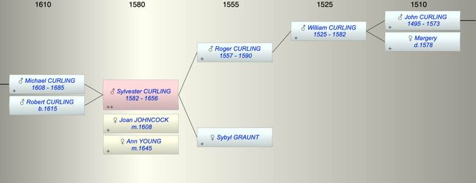

| [Index] |
| Sylvester CURLING (1582 - 1656) |
|  |
| b. 1582 at St Peter, Thanet |
| m. (1) 01 Feb 1608 Joan JOHNCOCK at St Peter, Thanet |
| m. (2) 23 Jun 1645 Ann YOUNG at St Lawrence |
| d. 1656 at St Lawrence aged 74 |
| Parents: |
| Roger CURLING (1557 - 1590) |
| Sybyl GRAUNT |
| Siblings (2): |
| Alice CURLING (1588 - ) |
| Edward CURLING (1586 - ) |
| Children (2): |
| Michael CURLING (1608 - 1685) |
| Robert CURLING (1615 - ) |
| Grandchildren (1): |
| Sylvester CURLING (1640 - 1662) |
| Events in Sylvester CURLING (1582 - 1656)'s life | |||||
| Date | Age | Event | Place | Notes | Src |
| 1582 | Sylvester CURLING was born | St Peter, Thanet | Note 1 | ||
| 1590 | 8 | Death of father Roger CURLING (aged 33) | St Lawrence | Note 2 | |
| 1608 | 26 | Birth of son Michael CURLING | St Peter, Thanet | Note 3 | |
| 01 Feb 1608 | 26 | Married Joan JOHNCOCK | St Peter, Thanet | Note 4 | |
| 1615 | 33 | Birth of son Robert CURLING | St Peter, Thanet | Note 5 | |
| 23 Jun 1645 | 63 | Married Ann YOUNG | St Lawrence | Note 6 | |
| 1656 | 74 | Sylvester CURLING died | St Lawrence | Note 7 | |
| Personal Notes: |
|
Did he remarry Ann Young 23 Jun 1645 at St Lawrence he was a widower, husbandman and she was widow of Robert ex FMP
and did he died in 1656, buried St Lawrence |
| Created on a Mac™ using iFamily for Mac™ on 8 Oct 2023 |